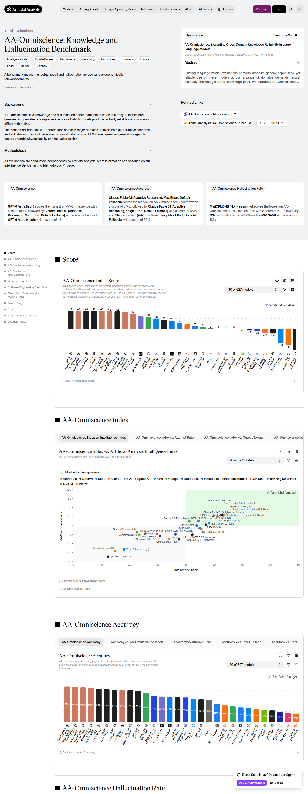
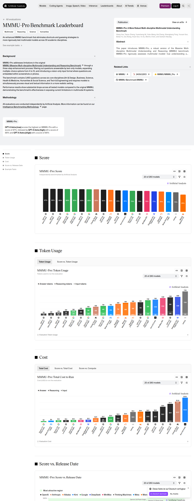
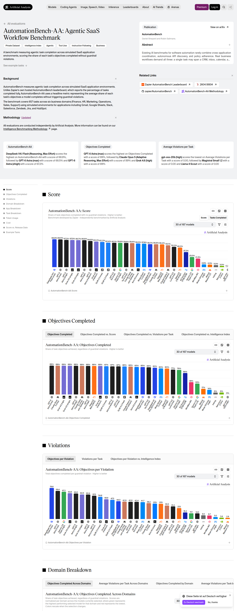

SUPRABENCH · CURATION RUN · 2026-09-17-d · batch 1 of 2
Dense frontier backfill from Artificial Analysis
The ranking audit of 16–17 September 2026 showed that SupraBench under-measured the current frontier: Claude Fable 5.1 had five benchmark cells in production while its publisher-run results covered fifteen, results of one release were scattered over several configuration names, and the benchmarks on which every frontier release is measured today had been deferred run after run. This batch inserts cells that Artificial Analysis publishes and production lacked. Nothing is replaced or removed; existing cells — whatever their source — are left untouched.
Values were read from the result matrix embedded in the publisher's pages (payload self.__next_f, arrays models and initialModels) at 2026-09-17T16:48:27.575Z and rounded to the precision the publisher displays (0.1 %, whole Elo points, 0.1 index points). The screenshots below document page, benchmark version and chart at read time.
Summary
- 150 score rows inserted across 5 sources (3 belong to the publisher's 30 default frontier models).
- New benchmarks in this batch: none.
- New models in this batch: none.
Source evidence
https://artificialanalysis.ai/evaluations/omniscience

https://artificialanalysis.ai/evaluations/critpt

https://artificialanalysis.ai/evaluations/terminalbench-hard

https://artificialanalysis.ai/evaluations/mmmu-pro

https://artificialanalysis.ai/evaluations/automationbench-aa

Inserted rows
AA-Omniscience — 48 rows
| Production model | Publisher row | Publisher value | Stored raw score |
|---|---|---|---|
| Claude Fable 5 (adaptive max/fallback) | Claude Fable 5 (with fallback) | 43.3 | 43.3 |
| Claude Opus 4.8 (max) | Claude Opus 4.8 (max) | 28.75 | 28.8 |
| Muse Spark 1.1 (xhigh) | Muse Spark 1.1 (xhigh) | 28.0833333333333 | 28.1 |
| Claude Opus 4.7 (max) | Claude Opus 4.7 (max) | 27.2666666666667 | 27.3 |
| Muse Spark 1.2 (xhigh) | Muse Spark 1.2 (xhigh) | 27.2 | 27.2 |
| Gemini 3.7 Flash (high) | Gemini 3.7 Flash (high) | 26.4833333333333 | 26.5 |
| Gemini 3.5 Flash (medium) | Gemini 3.5 Flash (medium) | 20.8166666666667 | 20.8 |
| GPT-5.5 (xhigh) | GPT-5.5 (xhigh) | 20.5166666666667 | 20.5 |
| GPT-5.5 (high) | GPT-5.5 (high) | 18.75 | 18.8 |
| GPT-5.5 (medium) | GPT-5.5 (medium) | 18.1 | 18.1 |
| Gemini 3 Pro Preview (high) | Gemini 3 Pro Preview (high) | 15.2833333333333 | 15.3 |
| GPT-5.5 (low) | GPT-5.5 (low) | 15.1 | 15.1 |
| Claude Opus 4.7 (Non-reasoning, high) | Claude Opus 4.7 (Non-reasoning, high) | 14.8333333333333 | 14.8 |
| Grok 4.20 0309 v2 | Grok 4.20 0309 v2 | 14.8333333333333 | 14.8 |
| Claude Opus 4.6 (max) | Claude Opus 4.6 (max) | 13.6666666666667 | 13.7 |
| Grok 4.20 0309 | Grok 4.20 0309 | 12.95 | 13 |
| Claude Sonnet 4.6 (max) | Claude Sonnet 4.6 (max) | 12.2166666666667 | 12.2 |
| Gemini 3 Flash | Gemini 3 Flash | 10.1333333333333 | 10.1 |
| Muse Spark | Muse Spark | 7.16666666666667 | 7.2 |
| GPT-5.4 (xhigh) | GPT-5.4 (xhigh) | 5.78333333333333 | 5.8 |
| GPT-5.1 (high) | GPT-5.1 (high) | 5.4 | 5.4 |
| Kimi K2.6 | Kimi K2.6 | 5.3 | 5.3 |
| GLM-5.2 (max) | GLM-5.2 (max) | 4.43333333333333 | 4.4 |
| Grok 4 | Grok 4 | 2.1 | 2.1 |
| GLM-5.1 | GLM-5.1 | 0.85 | 0.9 |
| GLM-5 | GLM-5 | 0.266666666666667 | 0.3 |
| Claude 4.5 Sonnet | Claude 4.5 Sonnet | -0.0833333333333333 | -0.1 |
| GPT-5.2 (xhigh) | GPT-5.2 (xhigh) | -0.883333333333333 | -0.9 |
| GPT-5.2 Codex (xhigh) | GPT-5.2 Codex (xhigh) | -2.16666666666667 | -2.2 |
| Kimi K2.5 | Kimi K2.5 | -7.33333333333333 | -7.3 |
| GPT-5 (high) | GPT-5 (high) | -8.73333333333333 | -8.7 |
| DeepSeek V4 Pro (Max) | DeepSeek V4 Pro (max) | -10.7333333333333 | -10.7 |
| o1 | o1 | -11.05 | -11 |
| Gemini 2.5 Pro | Gemini 2.5 Pro | -16.35 | -16.3 |
| Gemini 3.1 Flash-Lite | Gemini 3.1 Flash-Lite | -16.4166666666667 | -16.4 |
| GPT-5.4 nano | GPT-5.4 nano | -18.0333333333333 | -18 |
| GPT-5.4 mini (xhigh) | GPT-5.4 mini (xhigh) | -18.9166666666667 | -18.9 |
| DeepSeek V3.2 | DeepSeek V3.2 | -22.4833333333333 | -22.5 |
| DeepSeek V4 Flash (Max) | DeepSeek V4 Flash (max) | -23.9 | -23.9 |
| Kimi K2 | Kimi K2 | -28.3166666666667 | -28.3 |
| GPT-5.4 nano (xhigh) | GPT-5.4 nano (xhigh) | -29.4666666666667 | -29.5 |
| Gemini 2.5 Flash | Gemini 2.5 Flash | -29.8 | -29.8 |
| Grok 4.1 Fast | Grok 4.1 Fast | -29.9166666666667 | -29.9 |
| Grok 4 Fast | Grok 4 Fast | -29.9333333333333 | -29.9 |
| GPT-5 (minimal) | GPT-5 (minimal) | -33.8 | -33.8 |
| KAT-Coder-Pro V1 | KAT-Coder-Pro V1 | -37.7333333333333 | -37.7 |
| Gemini 2.5 Flash-Lite | Gemini 2.5 Flash-Lite | -45.6166666666667 | -45.6 |
| Solar Pro 3 | Solar Pro 3 | -53.4 | -53.4 |
CritPt — 48 rows
| Production model | Publisher row | Publisher value | Stored raw score |
|---|---|---|---|
| Claude Fable 5 (adaptive max/fallback) | Claude Fable 5 (with fallback) | 0.2857142857 | 286 |
| GPT-5.5 (xhigh) | GPT-5.5 (xhigh) | 0.271428571428571 | 271 |
| GPT-5.5 (high) | GPT-5.5 (high) | 0.254285714285714 | 254 |
| GPT-5.4 (xhigh) | GPT-5.4 (xhigh) | 0.2342857143 | 234 |
| Claude Opus 4.8 (max) | Claude Opus 4.8 (max) | 0.208571428571429 | 209 |
| GLM-5.2 (max) | GLM-5.2 (max) | 0.208571428571429 | 209 |
| GPT-5.5 (medium) | GPT-5.5 (medium) | 0.185714285714286 | 186 |
| Muse Spark 1.2 (xhigh) | Muse Spark 1.2 (xhigh) | 0.177142857142857 | 177 |
| Muse Spark 1.1 (xhigh) | Muse Spark 1.1 (xhigh) | 0.151428571428571 | 151 |
| Gemini 3.7 Flash (high) | Gemini 3.7 Flash (high) | 0.142857142857143 | 143 |
| DeepSeek V4 Pro (Max) | DeepSeek V4 Pro (max) | 0.128571428571429 | 129 |
| Claude Opus 4.6 (max) | Claude Opus 4.6 (max) | 0.125714285714286 | 126 |
| Claude Opus 4.7 (max) | Claude Opus 4.7 (max) | 0.12 | 120 |
| GPT-5.2 (xhigh) | GPT-5.2 (xhigh) | 0.115510204081633 | 116 |
| Muse Spark | Muse Spark | 0.11330612244898 | 113 |
| Gemini 3.5 Flash (medium) | Gemini 3.5 Flash (medium) | 0.108571428571429 | 109 |
| GPT-5.4 mini (xhigh) | GPT-5.4 mini (xhigh) | 0.1 | 100 |
| GPT-5.4 nano (xhigh) | GPT-5.4 nano (xhigh) | 0.0925306122448979 | 93 |
| Gemini 3 Pro Preview (high) | Gemini 3 Pro Preview (high) | 0.0914285714285714 | 91 |
| GPT-5.2 Codex (xhigh) | GPT-5.2 Codex (xhigh) | 0.0866938775510204 | 87 |
| Gemini 3 Flash | Gemini 3 Flash | 0.0857142857142857 | 86 |
| Kimi K2.6 | Kimi K2.6 | 0.08 | 80 |
| GPT-5.5 (low) | GPT-5.5 (low) | 0.08 | 80 |
| DeepSeek V4 Flash (Max) | DeepSeek V4 Flash (max) | 0.0714285714285714 | 71 |
| Grok 4.20 0309 v2 | Grok 4.20 0309 v2 | 0.0657142857142857 | 66 |
| Grok 4.20 0309 | Grok 4.20 0309 | 0.06 | 60 |
| GPT-5 (high) | GPT-5 (high) | 0.0571428571428571 | 57 |
| Claude Opus 4.7 (Non-reasoning, high) | Claude Opus 4.7 (Non-reasoning, high) | 0.0514285714285714 | 51 |
| GPT-5.4 nano | GPT-5.4 nano | 0.0514285714285714 | 51 |
| GPT-5.1 (high) | GPT-5.1 (high) | 0.0485714285714286 | 49 |
| GLM-5.1 | GLM-5.1 | 0.0457142857142857 | 46 |
| Kimi K2.5 | Kimi K2.5 | 0.0314285714285714 | 31 |
| Claude Sonnet 4.6 (max) | Claude Sonnet 4.6 (max) | 0.0314285714285714 | 31 |
| Grok 4.1 Fast | Grok 4.1 Fast | 0.0285714285714286 | 29 |
| Grok 4 Fast | Grok 4 Fast | 0.0285714285714286 | 29 |
| DeepSeek V3.2 | DeepSeek V3.2 | 0.0285714285714286 | 29 |
| Gemini 2.5 Pro | Gemini 2.5 Pro | 0.0257142857142857 | 26 |
| GLM-5 | GLM-5 | 0.02 | 20 |
| Grok 4 | Grok 4 | 0.02 | 20 |
| Gemini 2.5 Flash | Gemini 2.5 Flash | 0.0114285714285714 | 11 |
| Gemini 3.1 Flash-Lite | Gemini 3.1 Flash-Lite | 0.0114285714285714 | 11 |
| Claude 4.5 Sonnet | Claude 4.5 Sonnet | 0.0114285714285714 | 11 |
| o1 | o1 | 0.00285714285714286 | 3 |
| Kimi K2 | Kimi K2 | 0 | 0 |
| Solar Pro 3 | Solar Pro 3 | 0 | 0 |
| GPT-5 (minimal) | GPT-5 (minimal) | 0 | 0 |
| Gemini 2.5 Flash-Lite | Gemini 2.5 Flash-Lite | 0 | 0 |
| KAT-Coder-Pro V1 | KAT-Coder-Pro V1 | 0 | 0 |
Terminal-Bench Hard — 36 rows
| Production model | Publisher row | Publisher value | Stored raw score |
|---|---|---|---|
| Claude Opus 4.8 (max) | Claude Opus 4.8 (max) | 0.583333333333333 | 583 |
| GLM-5.2 (max) | GLM-5.2 (max) | 0.507575757575758 | 508 |
| GPT-5.2 (xhigh) | GPT-5.2 (xhigh) | 0.46969696969697 | 470 |
| Claude Opus 4.6 (max) | Claude Opus 4.6 (max) | 0.462121212121212 | 462 |
| DeepSeek V4 Pro (Max) | DeepSeek V4 Pro (max) | 0.462121212121212 | 462 |
| GPT-5.1 (high) | GPT-5.1 (high) | 0.454545454545455 | 455 |
| Muse Spark | Muse Spark | 0.454545454545455 | 455 |
| Kimi K2.6 | Kimi K2.6 | 0.439393939393939 | 439 |
| GLM-5 | GLM-5 | 0.431818181818182 | 432 |
| GLM-5.1 | GLM-5.1 | 0.431818181818182 | 432 |
| GPT-5.4 nano (xhigh) | GPT-5.4 nano (xhigh) | 0.424242424242424 | 424 |
| Gemini 3 Pro Preview (high) | Gemini 3 Pro Preview (high) | 0.416666666666667 | 417 |
| Grok 4.20 0309 | Grok 4.20 0309 | 0.409090909090909 | 409 |
| Gemini 3.5 Flash (medium) | Gemini 3.5 Flash (medium) | 0.393939393939394 | 394 |
| Gemini 3 Flash | Gemini 3 Flash | 0.386363636363636 | 386 |
| Grok 4 | Grok 4 | 0.378787878787879 | 379 |
| Grok 4.20 0309 v2 | Grok 4.20 0309 v2 | 0.378787878787879 | 379 |
| GPT-5.2 Codex (xhigh) | GPT-5.2 Codex (xhigh) | 0.371212121212121 | 371 |
| Claude 4.5 Sonnet | Claude 4.5 Sonnet | 0.356060606060606 | 356 |
| DeepSeek V3.2 | DeepSeek V3.2 | 0.356060606060606 | 356 |
| DeepSeek V4 Flash (Max) | DeepSeek V4 Flash (max) | 0.356060606060606 | 356 |
| Kimi K2.5 | Kimi K2.5 | 0.348484848484849 | 348 |
| GPT-5.4 nano | GPT-5.4 nano | 0.333333333333333 | 333 |
| GPT-5 (high) | GPT-5 (high) | 0.325757575757576 | 326 |
| Gemini 2.5 Pro | Gemini 2.5 Pro | 0.265151515151515 | 265 |
| Grok 4.1 Fast | Grok 4.1 Fast | 0.242424242424242 | 242 |
| Gemini 3.1 Flash-Lite | Gemini 3.1 Flash-Lite | 0.242424242424242 | 242 |
| Grok 4 Fast | Grok 4 Fast | 0.189393939393939 | 189 |
| GPT-5 (minimal) | GPT-5 (minimal) | 0.181818181818182 | 182 |
| Kimi K2 | Kimi K2 | 0.159090909090909 | 159 |
| Gemini 2.5 Flash | Gemini 2.5 Flash | 0.136363636363636 | 136 |
| o1 | o1 | 0.128787878787879 | 129 |
| KAT-Coder-Pro V1 | KAT-Coder-Pro V1 | 0.0909090909090909 | 91 |
| Solar Pro 3 | Solar Pro 3 | 0.0757575757575758 | 76 |
| o3-mini | o3-mini | 0.0681818181818182 | 68 |
| Gemini 2.5 Flash-Lite | Gemini 2.5 Flash-Lite | 0.0454545454545455 | 45 |
MMMU-Pro — 17 rows
| Production model | Publisher row | Publisher value | Stored raw score |
|---|---|---|---|
| Gemini 3.7 Flash (high) | Gemini 3.7 Flash (high) | 0.854913294797688 | 85.5 |
| Claude Opus 4.7 (max) | Claude Opus 4.7 (max) | 0.788439306358382 | 78.8 |
| GPT-5.2 Codex (xhigh) | GPT-5.2 Codex (xhigh) | 0.763005780346821 | 76.3 |
| GPT-5.1 (high) | GPT-5.1 (high) | 0.754913294797688 | 75.5 |
| Gemini 3.1 Flash-Lite | Gemini 3.1 Flash-Lite | 0.755491329479769 | 75.5 |
| Kimi K2.5 | Kimi K2.5 | 0.753757225433526 | 75.4 |
| Gemini 2.5 Pro | Gemini 2.5 Pro | 0.749132947976879 | 74.9 |
| GPT-5 (high) | GPT-5 (high) | 0.742196531791907 | 74.2 |
| Gemini 2.5 Flash | Gemini 2.5 Flash | 0.690751445086705 | 69.1 |
| Grok 4 | Grok 4 | 0.688439306358381 | 68.8 |
| Claude 4.5 Sonnet | Claude 4.5 Sonnet | 0.68728323699422 | 68.7 |
| GPT-5.4 nano (xhigh) | GPT-5.4 nano (xhigh) | 0.653757225433526 | 65.4 |
| Grok 4.1 Fast | Grok 4.1 Fast | 0.632947976878613 | 63.3 |
| GPT-5 (minimal) | GPT-5 (minimal) | 0.620809248554913 | 62.1 |
| Grok 4 Fast | Grok 4 Fast | 0.617919075144509 | 61.8 |
| GPT-5.4 nano | GPT-5.4 nano | 0.595375722543353 | 59.5 |
| Gemini 2.5 Flash-Lite | Gemini 2.5 Flash-Lite | 0.582080924855491 | 58.2 |
AutomationBench-AA — 1 rows
| Production model | Publisher row | Publisher value | Stored raw score |
|---|---|---|---|
| Claude Fable 5 (adaptive max/fallback) | Claude Fable 5 (with fallback) | 0.5407130114065382 | 541 |
Not imported
- Muse Glimmer (high) | aa-briefcase | 481 outside 500–2500 (publisher clamps it)
- gpt-oss-120b (high) | aa-briefcase | 0 outside 500–2500 (publisher clamps it)
Validation
Generated by scripts/curation-aa-backfill.mjs; validated with npm run curation:validate, dry-run against upbeat-clam-790, applied once, D1 mirror drift checked afterwards. See the commit that publishes this report for the recorded results.